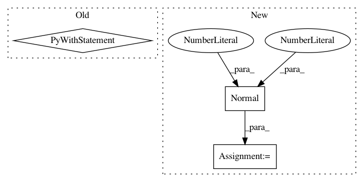

237993ad641d386bf60f8414458c41a21c0a3c5b,pymc/tests/test_diagnostics.py,,test_effective_n,#Any#Any#,43
Before Change
def test_effective_n(k=3, n=1000):
Unit test for effective sample size
with nm.model:
// Run sampler
ptrace = sample(n, step, start, njobs=k,
random_seed=42)
n_eff = effective_n(ptrace)
assert np.isclose(n_eff, k*n, 2).all()
After Change
model = Model()
with model:
x = Normal("x", 0, 1., shape=5)
// start sampling at the MAP
start = find_MAP()
In pattern: SUPERPATTERN
Frequency: 3
Non-data size: 3
Instances
Project Name: pymc-devs/pymc3
Commit Name: 237993ad641d386bf60f8414458c41a21c0a3c5b
Time: 2015-01-11
Author: chris.fonnesbeck@vanderbilt.edu
File Name: pymc/tests/test_diagnostics.py
Class Name:
Method Name: test_effective_n
Project Name: pymc-devs/pymc3
Commit Name: e22523b4ba884c46b03324b92180662a1397b5cb
Time: 2015-09-24
Author: chris.fonnesbeck@vanderbilt.edu
File Name: pymc3/tests/test_step.py
Class Name:
Method Name: test_assign_step_methods
Project Name: cornellius-gp/gpytorch
Commit Name: f73f721fda3b3d812fb5bcd491138fc03448a8ff
Time: 2019-11-10
Author: gpleiss@gmail.com
File Name: gpytorch/models/pyro/pyro_gp.py
Class Name: PyroGP
Method Name: model